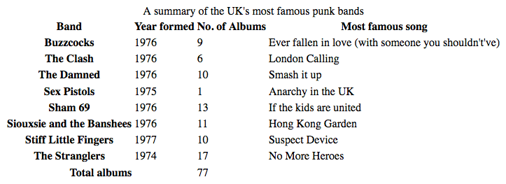
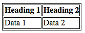
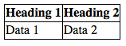
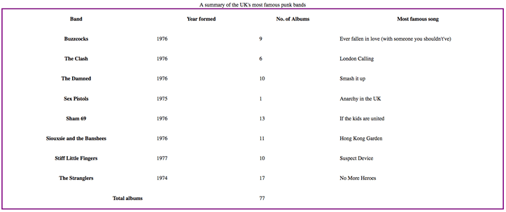
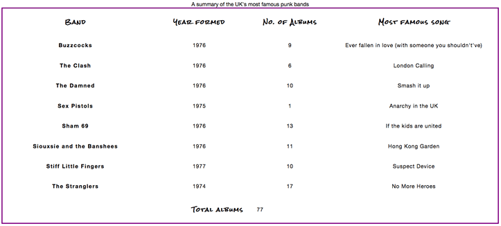
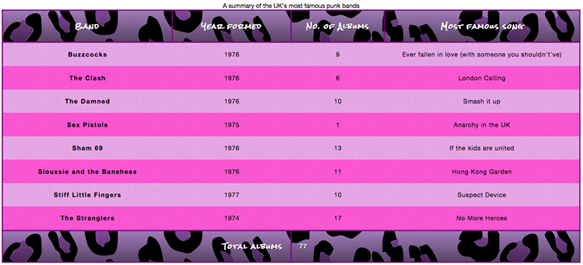
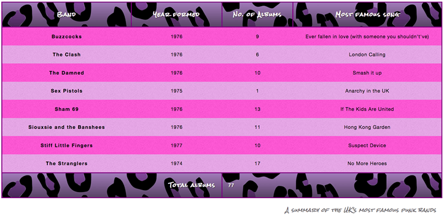

Styling an HTML table isn't the most glamorous job in the world, but sometimes we all have to do it. This article provides a guide to making HTML tables look good, with some specific table styling techniques highlighted.
| Prerequisites: | HTML basics (study Introduction to HTML), knowledge of HTML tables, and an idea of how CSS works (study CSS first steps.) |
|---|---|
| Objective: | To learn how to effectively style HTML tables. |
Let's start by looking at a typical HTML table. Well, I say typical — most HTML table examples are about shoes, or the weather, or employees; we decided to make things more interesting by making it about famous punk bands from the UK. The markup looks like so:
<table>
<caption>A summary of the UK's most famous punk bands</caption>
<thead>
<tr>
<th scope="col">Band</th>
<th scope="col">Year formed</th>
<th scope="col">No. of Albums</th>
<th scope="col">Most famous song</th>
</tr>
</thead>
<tbody>
<tr>
<th scope="row">Buzzcocks</th>
<td>1976</td>
<td>9</td>
<td>Ever fallen in love (with someone you shouldn't've)</td>
</tr>
<tr>
<th scope="row">The Clash</th>
<td>1976</td>
<td>6</td>
<td>London Calling</td>
</tr>
... some rows removed for brevity
<tr>
<th scope="row">The Stranglers</th>
<td>1974</td>
<td>17</td>
<td>No More Heroes</td>
</tr>
</tbody>
<tfoot>
<tr>
<th scope="row" colspan="2">Total albums</th>
<td colspan="2">77</td>
</tr>
</tfoot>
</table>
The table is nicely marked up, easily stylable, and accessible, thanks to features such as {{htmlattrxref("scope","th")}}, {{htmlelement("caption")}}, {{htmlelement("thead")}}, {{htmlelement("tbody")}}, etc. Unfortunately, it doesn't look good when rendered on the screen (see it live at punk-bands-unstyled.html):

With only the default browser styling it looks cramped, hard to read, and boring. We need to use some CSS to fix this up.
Let's work through styling our table example together.
style.css and save it in the same directory as your other files.<link href="style.css" rel="stylesheet" type="text/css">
The first thing we need to do is sort out the spacing/layout — default table styling is so cramped! To do this, add the following CSS to your style.css file:
/* spacing */
table {
table-layout: fixed;
width: 100%;
border-collapse: collapse;
border: 3px solid purple;
}
thead th:nth-child(1) {
width: 30%;
}
thead th:nth-child(2) {
width: 20%;
}
thead th:nth-child(3) {
width: 15%;
}
thead th:nth-child(4) {
width: 35%;
}
th, td {
padding: 20px;
}
The most important parts to note are as follows:
fixed is generally a good idea to set on your table, as it makes the table behave a bit more predictably by default. Normally, table columns tend to be sized according to how much content they contain, which produces some strange results. With table-layout: fixed, you can size your columns according to the width of their headings, and then deal with their content as appropriate. This is why we've selected the four different headings with the thead th:nth-child(n) ({{cssxref(":nth-child")}}) selector ("Select the nth child that is a {{htmlelement("th")}} element in a sequence, inside a {{htmlelement("thead")}} element") and given them set percentage widths. The entire column width follows the width of its heading, making for a nice way to size your table columns. Chris Coyier discusses this technique in more detail in Fixed Table Layouts.collapse is a standard best practice for any table styling effort. By default, when you set borders on table elements, they will all have spacing between them, as the below image illustrates:  This doesn't look very nice (although it might be the look you want, who knows?) With border-collapse: collapse; set, the borders collapse down into one, which looks much better: At this point, our table already looks a lot better:

Now we'll get our text sorted out a bit.
First of all, we've found a font on Google Fonts that is suitable for a table about punk bands. You can go there and find a different one if you like; you'll just have to replace our provided {{htmlelement("link")}} element and custom {{cssxref("font-family")}} declaration with the ones Google Fonts gives you.
First, add the following {{htmlelement("link")}} element into your HTML head, just above your existing <link> element:
<link href='https://fonts.googleapis.com/css?family=Rock+Salt' rel='stylesheet' type='text/css'>
Now add the following CSS into your style.css file, below the previous addition:
/* typography */
html {
font-family: 'helvetica neue', helvetica, arial, sans-serif;
}
thead th, tfoot th {
font-family: 'Rock Salt', cursive;
}
th {
letter-spacing: 2px;
}
td {
letter-spacing: 1px;
}
tbody td {
text-align: center;
}
tfoot th {
text-align: right;
}
There is nothing really specific to tables here; we are generally tweaking the font styling to make things easier to read:
left, and headings are given a value of center, but generally it looks better to have the alignments set the same for both. The default bold weight on the heading fonts is enough to differentiate their look.The result looks a bit neater:

Now onto graphics and colors! Because the table is full of punk and attitude, we need to give it some bright imposing styling to suit. Don't worry, you don't have to make your tables this loud — you can opt for something more subtle and tasteful.
Start by adding the following CSS to your style.css file, again at the bottom:
/* graphics and colors */
thead, tfoot {
background: url(leopardskin.jpg);
color: white;
text-shadow: 1px 1px 1px black;
}
thead th, tfoot th, tfoot td {
background: linear-gradient(to bottom, rgba(0,0,0,0.1), rgba(0,0,0,0.5));
border: 3px solid purple;
}
Again, there's nothing specific to tables here, but it is worthwhile to note a few things.
We've added a {{cssxref("background-image")}} to the {{htmlelement("thead")}} and {{htmlelement("tfoot")}}, and changed the {{cssxref("color")}} of all the text inside the header and footer to white (and given it a {{cssxref("text-shadow")}}) so it is readable. You should always make sure your text contrasts well with your background, so it is readable.
We've also added a linear gradient to the {{htmlelement("th")}} and {{htmlelement("td")}} elements inside the header and footer for a nice bit of texture, as well as giving those elements a bright purple border. It is useful to have multiple nested elements available so you can layer styles on top of one another. Yes, we could have put both the background image and the linear gradient on the {{htmlelement("thead")}} and {{htmlelement("tfoot")}} elements using multiple background images, but we decided to do it separately for the benefit of older browsers that don't support multiple background images or linear gradients.
We wanted to dedicate a separate section to showing you how to implement zebra stripes — alternating rows of color that make the different data rows in your table easier to parse and read. Add the following CSS to the bottom of your style.css file:
/* zebra striping */
tbody tr:nth-child(odd) {
background-color: #ff33cc;
}
tbody tr:nth-child(even) {
background-color: #e495e4;
}
tbody tr {
background-image: url(noise.png);
}
table {
background-color: #ff33cc;
}
2n-1 would select all the odd numbered children (1, 3, 5, etc.) and the formula 2n would select all the even numbered children (2, 4, 6, etc.) We've used the odd and even keywords in our code, which do exactly the same things as the aforementioned formulae. In this case we are giving the odd and even rows different (lurid) colors..png with a bit of visual distortion on it) to provide some texture.:nth-child selector still have a background for their body rows.This color explosion results in the following look:

Now, this may be a bit over the top and not to your taste, but the point we are trying to make here is that tables don't have to be boring and academic.
There is one last thing to do with our table — style the caption. To do this, add the following to the bottom of your style.css file:
/* caption */
caption {
font-family: 'Rock Salt', cursive;
padding: 20px;
font-style: italic;
caption-side: bottom;
color: #666;
text-align: right;
letter-spacing: 1px;
}
There is nothing remarkable here, except for the {{cssxref("caption-side")}} property, which has been given a value of bottom. This causes the caption to be positioned on the bottom of the table, which along with the other declarations gives us this final look (see it live at punk-bands-complete.html):

Before moving on, we thought we'd provide you with a quick list of the most useful points illustrated above:
: fixed to create a more predictable table layout that allows you to easily set column widths by setting {{cssxref("width")}} on their headings ({{htmlelement("th")}}).: collapse to make table elements borders collapse into each other, producing a neater and easier to control look.We have covered a lot in this article, but can you remember the most important information? You can find some further tests to verify that you've retained this information before you move on — see Test your skills: tables.
With styling tables now behind us, we need something else to occupy our time. The next article explores debugging CSS — how to solve problems such as layouts not looking like they should, or properties not applying when you think they should. This includes information on using browser DevTools to find solutions to your problems.
{{PreviousMenuNext("Learn/CSS/Building_blocks/Images_media_form_elements", "Learn/CSS/Building_blocks/Debugging_CSS", "Learn/CSS/Building_blocks")}}
{kind=link}
{kind=link}